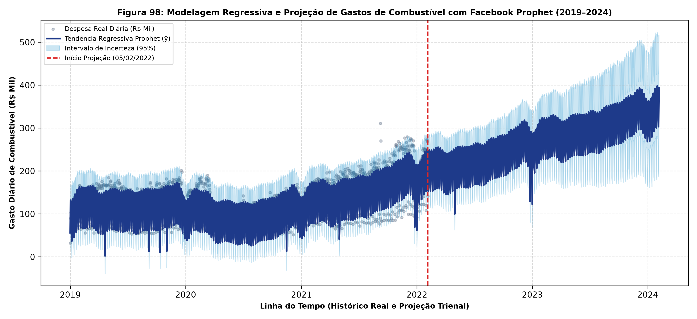
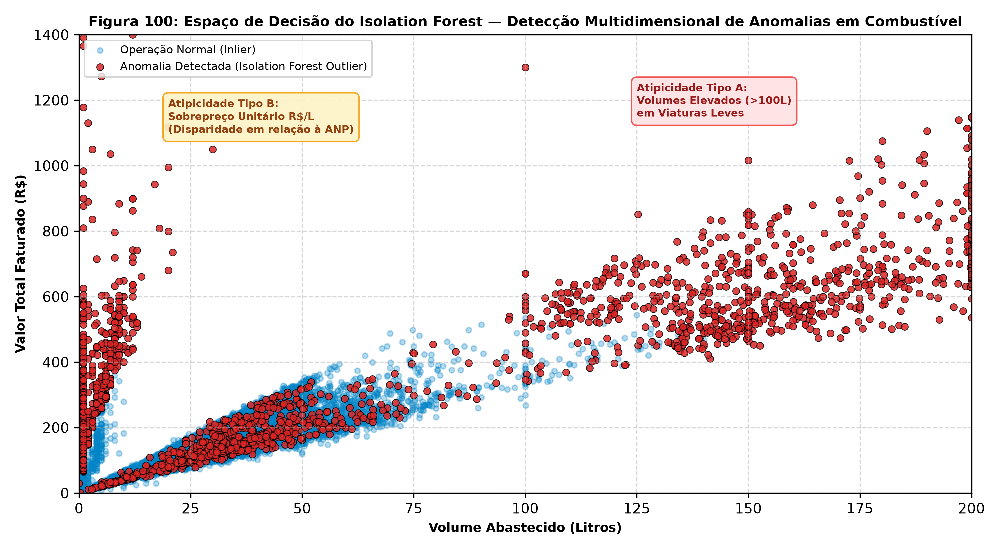
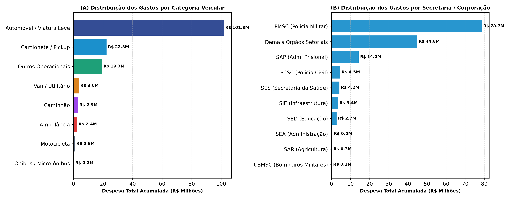

Visualização pericial e analítica com 1.000.000 de abastecimentos (2019 a 2022). Permite a exploração temporal, decomposição por derivado de petróleo, análise de eficiência (Km/L), concentração geográfica e triagem forense de inconsistências de abastecimento.

Modelo linear com feriados e sazonalidades captando a inflexão de preços de 2021 e projetando a banda orçamentária com 95% de confiança para 24 meses.

Triagem de 13.936 transações atípicas (1,39%), separando sobrepreços severos (média de R$ 52,33/L vs R$ 5,41/L normal) e volumes incompatíveis com o tanque (> 90L em veículos leves).

| Placa | Modelo / Marca | Unidade Policial | Despesa Total (R$) | Litros Consumidos | Abastecimentos | Status de Consumo |
|---|
| Razão Social / Posto | Município | Valor Faturado (R$) | Litros Fornecidos | Preço Médio (R$/L) | Transações |
|---|